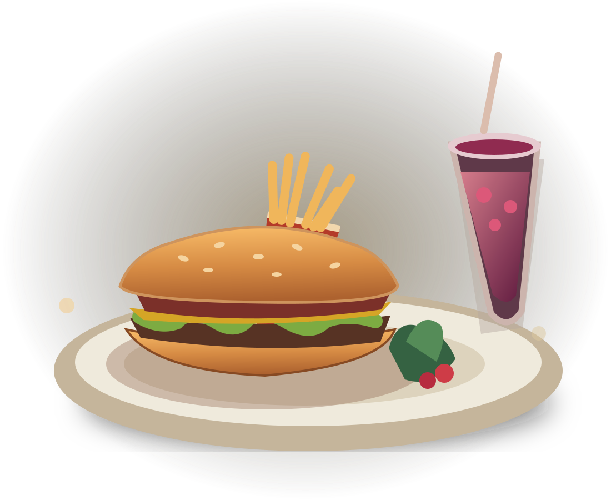
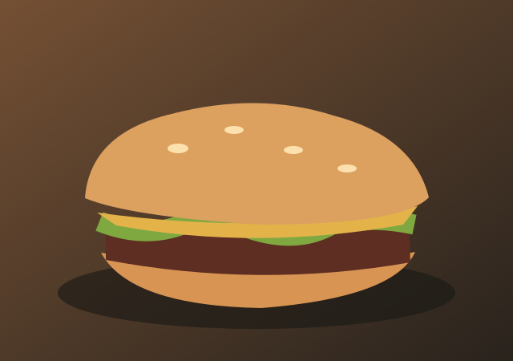
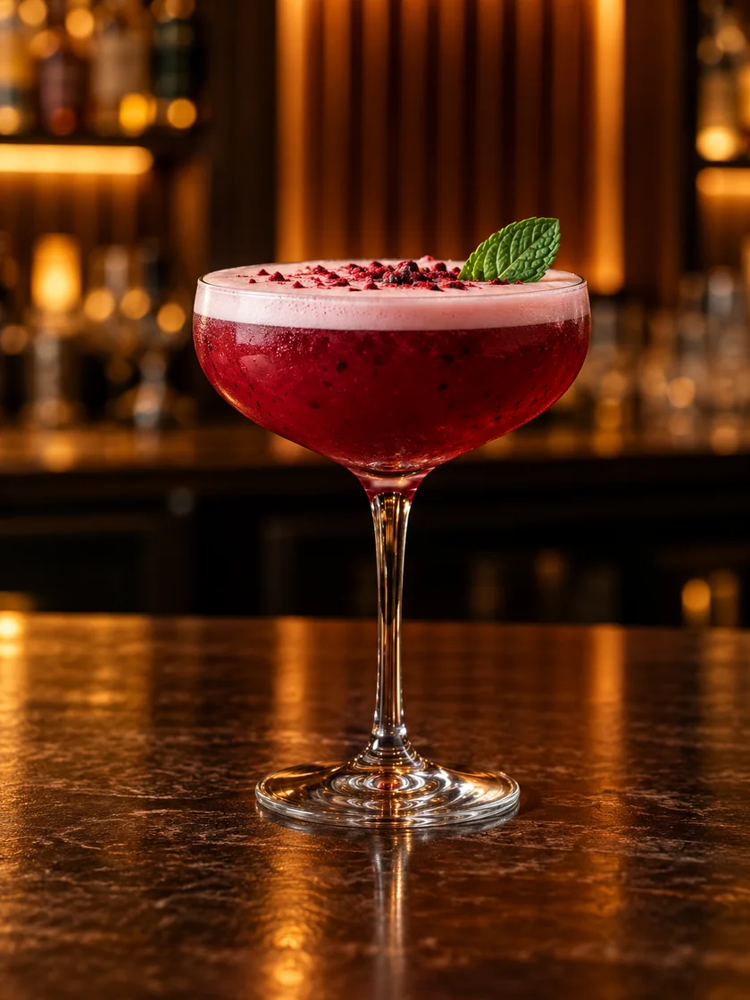

✦ КАФЕ «ПРАЙД» · ВОЛНОВАХА
Встречаемся
Встречаемся
за вкусным.
Меню кухни, барная карта, новости и корзина — всё для вашего выбора.
01 / 03ВАШ СТОЛ · ВАШ ВЕЧЕР

СОБИРАЕМСЯЗА СТОЛОМ ✳
СО ВКУСОМ К ДЕТАЛЯМКухня, бар и новости
Кухня, бар и новости
в одном приложении.
Любимые закуски, горячее, роллы, пицца, коктейли, кофе и чай — всё собрано в одном месте. Сохраняйте понравившееся в корзину и возвращайтесь к выбору позже.

ЛЮБИМАЯ КЛАССИКАБургеры↗
БАРНАЯ КАРТАКоктейли и напитки↗ ВСЕГДА НА СВЯЗИНовости кафе↗НА СВЯЗИДо встречи
До встречи
в «Прайде».
По вопросам бронирования, актуального меню и новостей звоните нам.